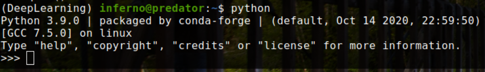

TensorRT Installation & Optimization
Introduction
TensorRT is a Software Development Kit(SDK) from Nvidia. It enables developers to develop highly
efficient neural network models, which are capable of providing signficantly low inference time
than their non-trt optimized counterparts. As useful as this technology is, it is not the easiest
one to install and get running, given a plethora of it's dependencies. In this article we are going
to install TensorRT in a conda environment, as it is the most easy and relable way to get it up
and running quickly. Let's begin!
Requirements
It is assumed that following requirements are met, before proceeding with any of the below installation.
- Ubuntu 20.04 LTS.
- Nvidia Graphics Card, with CUDA compatible display drivers.
- GCC compiler version 7.x or above.
- Anaconda
Installation and Configuration
Let us start with creating the conda environment. It can be done easily by typing in the following
command into terminal. Replace "your-enviroment-name" by the name you prefer for this env.
$ conda create -n "your-enviroment-name" tensoflow-gpu==2.4.1
The above command creates a new conda environment and installs tensorflow-gpu on the latest
python version available. However you can specify the python version by adding "python==3.x" in the
end like so, and activating it.
$ conda create -n "your-enviroment-name" tensoflow-gpu==2.4.1 python==3.8
$ conda activate "your-enviroment-name"
We can verify the installation of tensorflow-gpu at this point, by importing tensorflow in python
and checking if gpu is visible to tensorflow, as follows.
$ python
>>> import tensorflow as tf
>>> tf.__version
>>> tf.test.is_gpu_available() # this should return true
>>> quit()
[Optional] Install other libraries like matplotlib, pandas, scikit-learn, etc.. as follows.
$ conda install -c anaconda pandas matplotlib scikit-learn
Installing TensorRT in conda environment.
$ pip install nvidia-pyindex
$ pip install nvidia-tensorrt
After this installation the compiler will change from "[GCC 7.3.0] :: Anaconda, Inc. on linux" (version
may differ) to something like "[GCC 7.5.0] on linux" depending on the compiler installed on your
system. You can check the compiler, by simply typing python in the terminal and pressing enter. An
output like this should show up.

Optimizing a deep learning model using TensorRT
We can now verify the TensorRT installation by optimizing a model. I have used Xception Net here, but
you can use any model as long as it is in .pb (protobuf) format, by just changing the path to your
model in the following python script.
from tensorflow.python.compiler.tensorrt import trt_convert as trt
input_saved_model_dir = "./Reference_Data/Model/Xception/"
output_saved_model_dir = "./Reference_Data/Model/Xception/TRT_Model"
print("Conversion : Started")
converter = trt.TrtGraphConverterV2(input_saved_model_dir=
input_saved_model_dir)
converter.convert()
converter.save(output_saved_model_dir)
print("Conversion : Finished")
The Output of the above code should look like this in jupyter notebook or any other IDE.
Conversion : Started
INFO:tensorflow:Linked TensorRT version: (0, 0, 0)
INFO:tensorflow:Loaded TensorRT version: (0, 0, 0)
INFO:tensorflow:Assets written to: ./Reference_Data/Model/Xception/TRT_Model/assets
Conversion : Finished
And that concludes the installation, configuration as well as optimization of TensorRT. I hope it helps, if you come across any problems in the way, feel free to contact me here. If you like this article, share it with your friends and follow me on github.